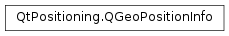

QGeoPositionInfo¶
Synopsis¶
Functions¶
- def
__eq__(other) - def
__ne__(other) - def
attribute(attribute) - def
coordinate() - def
hasAttribute(attribute) - def
isValid() - def
removeAttribute(attribute) - def
setAttribute(attribute, value) - def
setCoordinate(coordinate) - def
setTimestamp(timestamp) - def
timestamp()
Detailed Description¶
The
PySide2.QtPositioning.QGeoPositionInfoclass contains information gathered on a global position, direction and velocity at a particular point in time.A
PySide2.QtPositioning.QGeoPositionInfocontains, at a minimum, a geographical coordinate and a timestamp. It may also have heading and speed measurements as well as estimates of the accuracy of the provided data.
-
class
PySide2.QtPositioning.QGeoPositionInfo¶ -
class
PySide2.QtPositioning.QGeoPositionInfo(coordinate, updateTime) -
class
PySide2.QtPositioning.QGeoPositionInfo(other) Parameters: - coordinate –
PySide2.QtPositioning.QGeoCoordinate - updateTime –
PySide2.QtCore.QDateTime - other –
PySide2.QtPositioning.QGeoPositionInfo
Creates an invalid
PySide2.QtPositioning.QGeoPositionInfoobject.Creates a
PySide2.QtPositioning.QGeoPositionInfofor the givencoordinateandtimestamp.Creates a
PySide2.QtPositioning.QGeoPositionInfowith the values ofother.- coordinate –
-
PySide2.QtPositioning.QGeoPositionInfo.Attribute¶ Defines the attributes for positional information.
Constant Description QGeoPositionInfo.Direction The bearing measured in degrees clockwise from true north to the direction of travel. QGeoPositionInfo.GroundSpeed The ground speed, in meters/sec. QGeoPositionInfo.VerticalSpeed The vertical speed, in meters/sec. QGeoPositionInfo.MagneticVariation The angle between the horizontal component of the magnetic field and true north, in degrees. Also known as magnetic declination. A positive value indicates a clockwise direction from true north and a negative value indicates a counter-clockwise direction. QGeoPositionInfo.HorizontalAccuracy The accuracy of the provided latitude-longitude value, in meters. QGeoPositionInfo.VerticalAccuracy The accuracy of the provided altitude value, in meters.
-
PySide2.QtPositioning.QGeoPositionInfo.attribute(attribute)¶ Parameters: attribute – PySide2.QtPositioning.QGeoPositionInfo.AttributeReturn type: PySide2.QtCore.qrealReturns the value of the specified
attributeas a qreal value.Returns NaN if the value has not been set.
The function
PySide2.QtPositioning.QGeoPositionInfo.hasAttribute()should be used to determine whether or not a value has been set for an attribute.
-
PySide2.QtPositioning.QGeoPositionInfo.coordinate()¶ Return type: PySide2.QtPositioning.QGeoCoordinateReturns the coordinate for this position.
Returns an invalid coordinate if no coordinate has been set.
-
PySide2.QtPositioning.QGeoPositionInfo.hasAttribute(attribute)¶ Parameters: attribute – PySide2.QtPositioning.QGeoPositionInfo.AttributeReturn type: PySide2.QtCore.boolReturns true if the specified
attributeis present for thisPySide2.QtPositioning.QGeoPositionInfoobject.
-
PySide2.QtPositioning.QGeoPositionInfo.isValid()¶ Return type: PySide2.QtCore.boolReturns true if the
PySide2.QtPositioning.QGeoPositionInfo.timestamp()andPySide2.QtPositioning.QGeoPositionInfo.coordinate()values are both valid.See also
QGeoCoordinate.isValid()QDateTime.isValid()
-
PySide2.QtPositioning.QGeoPositionInfo.__ne__(other)¶ Parameters: other – PySide2.QtPositioning.QGeoPositionInfoReturn type: PySide2.QtCore.boolReturns true if any of this object’s values are not the same as those of
other.
-
PySide2.QtPositioning.QGeoPositionInfo.__eq__(other)¶ Parameters: other – PySide2.QtPositioning.QGeoPositionInfoReturn type: PySide2.QtCore.boolReturns true if all of this object’s values are the same as those of
other.
-
PySide2.QtPositioning.QGeoPositionInfo.removeAttribute(attribute)¶ Parameters: attribute – PySide2.QtPositioning.QGeoPositionInfo.AttributeRemoves the specified
attributeand its value.
-
PySide2.QtPositioning.QGeoPositionInfo.setAttribute(attribute, value)¶ Parameters: - attribute –
PySide2.QtPositioning.QGeoPositionInfo.Attribute - value –
PySide2.QtCore.qreal
Sets the value for
attributetovalue.- attribute –
-
PySide2.QtPositioning.QGeoPositionInfo.setCoordinate(coordinate)¶ Parameters: coordinate – PySide2.QtPositioning.QGeoCoordinateSets the coordinate for this position to
coordinate.
-
PySide2.QtPositioning.QGeoPositionInfo.setTimestamp(timestamp)¶ Parameters: timestamp – PySide2.QtCore.QDateTimeSets the date and time at which this position was reported to
timestamp.The
timestampmust be in UTC time.
-
PySide2.QtPositioning.QGeoPositionInfo.timestamp()¶ Return type: PySide2.QtCore.QDateTimeReturns the date and time at which this position was reported, in UTC time.
Returns an invalid
PySide2.QtCore.QDateTimeif no date/time value has been set.
© 2018 The Qt Company Ltd. Documentation contributions included herein are the copyrights of their respective owners. The documentation provided herein is licensed under the terms of the GNU Free Documentation License version 1.3 as published by the Free Software Foundation. Qt and respective logos are trademarks of The Qt Company Ltd. in Finland and/or other countries worldwide. All other trademarks are property of their respective owners.